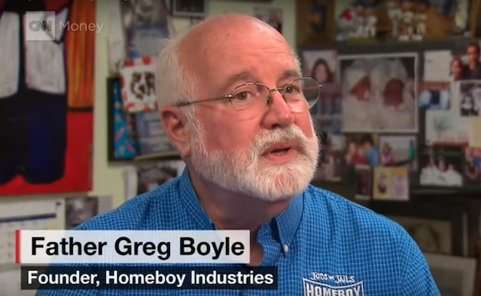
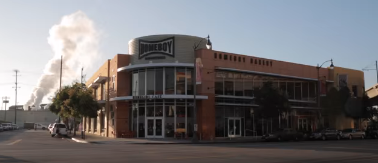

More Resources to Learn about Father Greg
-
Find out what kind of impression Fr Greg left on this fellow Jesuit.
-
In this newspaper article, read about the real work Father Boyle did while talking with gang members within their dangerous world.
-
His homies call him G-Dog. Find out about the movie about the life and works of Father Greg Boyle.

-
Here is a report from CNN telling about Fr Greg and his work with the Homeboy bakery.
 At Homeboy Industries, baking is a way of life – and a way out. Watch this video.
Take this link directly to the bakery. Don't forget to go to Downtown LA and visit The HOMEGIRL Cafe for some really good food.
Maybe you want to go see Fr Greg. Here is his current speaking schedule.
He is also available on social media.